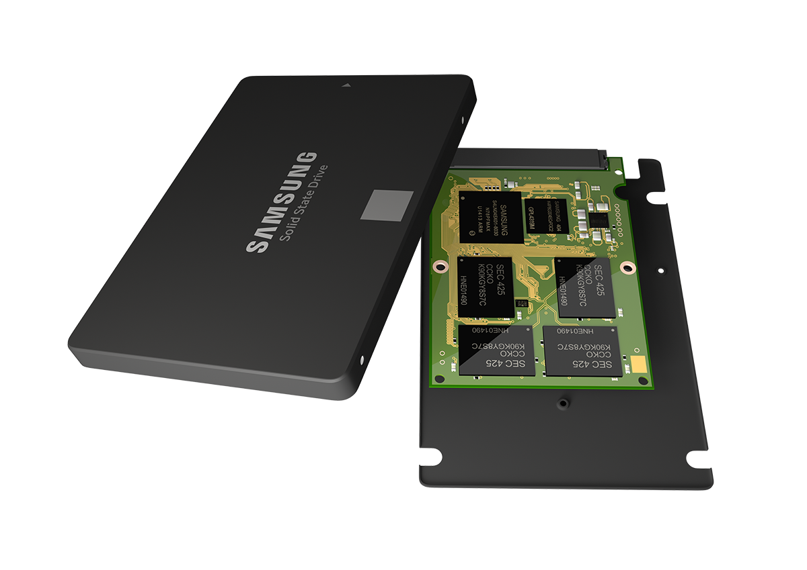

Es un dispositivo de almacenamiento masivo: guardan toda
la información de la compu tadora. Se encuentra dentro del gabinete y
conectada a la placa madre. Hay magnéticos, con partes mecánicas y
de estado sólido, sin ellas.
Magneticos: Discos rígidos. Son varios discos apilados e
insertados en un solo eje giratorio. Estos discos son de aluminio
y están recubiertos por óxido magnetizable. Tiene una cabeza
de escritura/lectura para cada cara de cada plato. Se
encuentra dentro de una unidad sellada: no entra polvo ni
humedad. Su velocidad de lectura y escritura es muy superior a
la de los CDs o DVDs y menor a la memoria RAM.
De estado solido: Con sigla S.S.D.
( Solid State Drive ) Usa una memoria no
volátil: la memoria flash. Resistentes a los
golpes, silenciosos y tienen un menor tiempo de
acceso. Las SSD modernos se colocan en la
placa madre.

2- Discos ópticos
Son soporte de almacenamiento de datos. Tienen una capa
metálica que refleja la luz revestida en plástico transparente. Los
datos se almacena en millones de agujeros y de zonas no agujereadas
(planicies) en la capa metálica. Se leen con un rayo láser cuya luz se
refleja sobre la superficie: el reflejo es diferente si hay un agujero o
planicie. Estan cayendo en desuso.
Hay 3 tipos de discos ópticos: el CD , el DVD y el Blu-ray.
CD: Tienen un diámetro de 12 cm. y de 8 cm. La capacidad de los
1o puede ser de hasta 800 MB. La información
se guarda en una sola pista de forma espiralada.
Hay básicamente tres tipos:
CD-ROM: No se puede grabar solo leer. Son los
discos originales de audio y de software.
CD-R: Permiten una sola grabación.
CD-RW: Permiten muchas grabaciones, pueden ser borrados.
DVD: El disco versátil digital, es la evolución del
CD. Utiliza un láser mas fino. Sus marcas son
mucho mas pequeñas. El de una sola cara almacena
4.7 GB y el de dos capas por cara hasta 17 GB.
BLU-RAY DISC: Se usan para vídeo de alta definición.
Utiliza un láser azli para escritura y lectura. Su
capacidad es de 25 GB por cada capa. (hasta
16 capas). Tiene cinco sistemas anticopia y la
protección externa que no permite que se rayen.
3- Dispositivos con memoria flash
Los 1a en aparecer fueron los Pen-
Drive, pero en la actualidad usan memoria flash
los celliares, cámaras digitales, et Los hay con
capacidades de hasta 2 TB.
Es seguro, pequeño y de gran capacidad.
Retiene los datos durante unos 20 años y pueden
escribirse un millón de veces.
Tienen hasta 147 teclas divididas en 4 bloques:
De funciones: Teclas F1 a F12. Funcionan de acuerdo al
programa activo. En muchos programas con F1 se accede a la ayuda.
Numéricas: Del 0 al 9 organizados como en una calcliadora
para facilitar la digitación de cifras. Támbien los signos de las
operaciones básicas: +, -, x y / y la tecla Enter.
Alfanuméricas: Contiene los números del 1 al 0 y el alfabeto
organizado como en una máquina de escribir, y teclas especiales.
Control: Teclas especiales como, pausa, inicio, fin, insertar,
suprimir, RePág, AvPág, y las flechas de las 4 direcciones.
2- Raton
Se lo mueve sobre una almohadilla en dos dimensiones para
apuntar en el monitor. Se basan en un sensor
fotográfíco que detecta los cambios posición.
Poseen dos teclas, la principal izquierda y la
secundaria derecha. Una ruedita central sirve
para tener un desplazamiento vertical.
3- Lector de código de barras
Ingresa datos en los puntos de ventas. Se
envia un rayo laser al código de barras y este se
refleja de nuevo hacia él, ésta informa-ción una
vez leída es transformada en un código. Los hay
fijos en una superficie física y otros son móviles,
operándolos manualmente.
4- Microfono
Se usa para transformar las ondas sonoras en
energía eléctrica. Esta se almacena digitalmente por
medio de una placa de sonido.
Muestra información como imagenes, textos y videos. La
imagen se forma por pequeños puntos llamados pixels. La resolución
son los números de pixeles horizontales
que puede representar por el número de
lineas verticales. Ejemplo 1024 x 768
significa que puede mostrar hasta 768
líneas horiz. de 1024 pixels cada una. Los
LED, consumen poca energía. El tamaño
se miden en diagonal y son desde 17
hasta 30 pligadas.
2- Impresora laser
Son como fotocopiadoras. Usan un láser dirigido, que
actúa sobre un tambor fotosensible al que luego se adhiere la
tinta en polvo (toner). La imagen
se fija en el tambor en forma de
carga electrostática ( - ) que atrae
y retiene el toner. Luego el
papel a imprimir es cargado
electrostáticamente con carga
(+) y al pasa junto al tambor a medida que este gira de forma tal que el
toner se queda pegado al papel. El toner se funde utilizando presión
y calor. Ventajas: producen texto en negro de calidad superior a un
costo más bajo por página. Son totalmente silenciosas. Su costo es
elevado
3- Proyector de video
Recibe una señal de vídeo y proyecta la
imagen correspondiente en una pantalla usando un sistema de lentes.
Es usado en clases, presentaciones o conferencias.
4- Auricliares
Recibe una señal eléctrica
desde una fuente y por su diseño permiten
colocarse cerca de los oídos unos altavoces para
generar ondas sonoras audibles. Son normalmente desmontables.
5- Parlantes
Al igual que los
auricliares, reciben señal electrica acústica y emiten sonidos
directamente al medio ambiente. Tienen mas fidelidad y potencia que
los primeros.
Se utiliza para los juegos. Los hay
digitales y analógicos. También muchos de
estos pueden considerarse hoy dispositivos
de entrada/salida, ya que emiten vibraciones para hacer los juegos mas realistas.
Pantalla tactil
Es una pantalla que mediante un toque directo sobre su
superficie permite la entrada de datos y órdenes al dispositivo, y a su
vez muestra los reslitados introducidos previamente. El contacto
también se puede realizar por medio de un lápiz óptico.